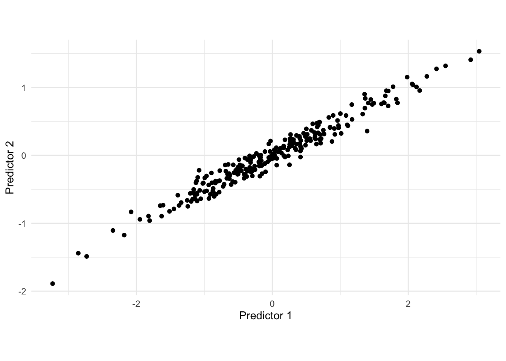
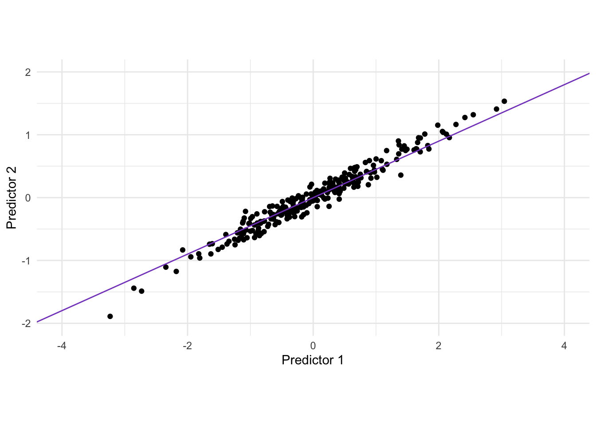
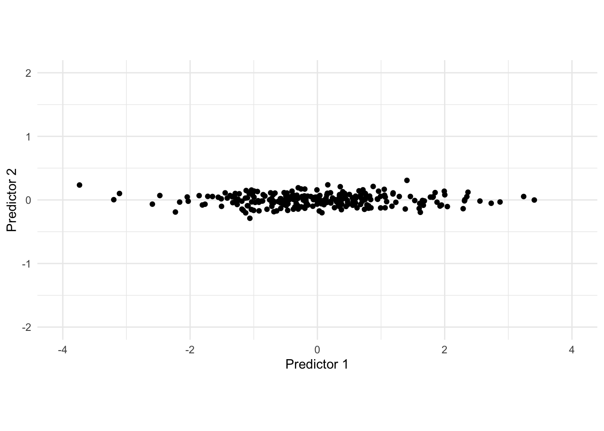
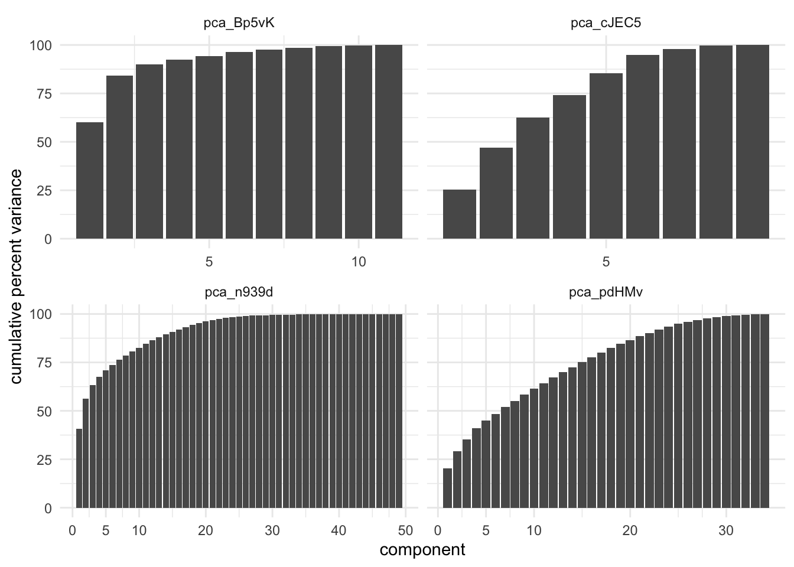
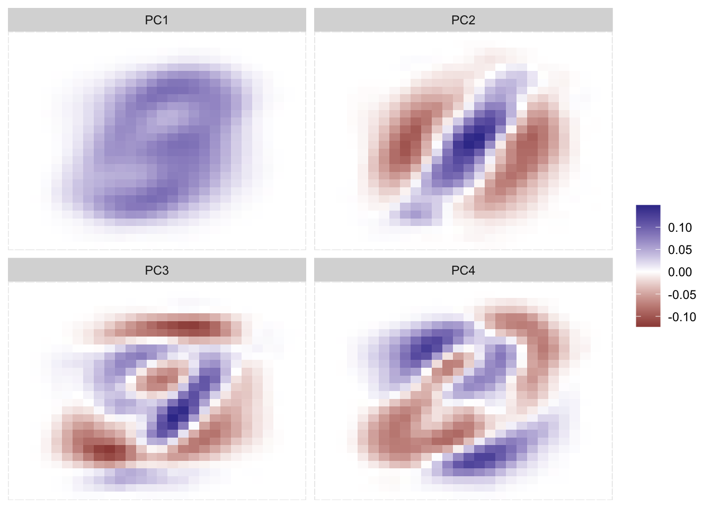
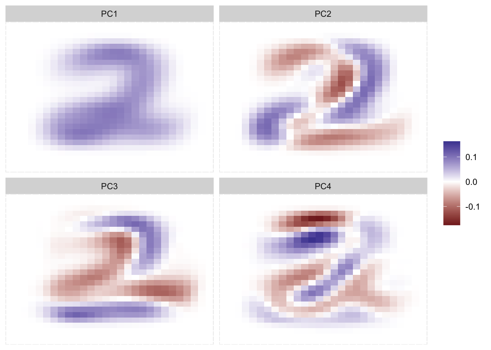

Warning: Using `size` aesthetic for lines was deprecated in ggplot2 3.4.0.
ℹ Please use `linewidth` instead.
ℹ The deprecated feature was likely used in the corrr package.
Please report the issue at <https://github.com/tidymodels/corrr/issues>.
The first dimensionality reduction method most people are introduced to is Principal Component Analysis (PCA). There is a good reason for this, it is a dependable method that has stood the test of time. This chapter will cover what PCA is in its main form, with its variants described in next chapter on PCA variants.
The reason why we want to apply PCA in the first place, is because we expect that the information in the predictors could be more efficiently stored. Or in other words, because there is redundancy in the data. This can also be seen in part using a correlation plot. Using the numeric variables of the ames data set, we can plot the correlation of it.
Warning: Using `size` aesthetic for lines was deprecated in ggplot2 3.4.0.
ℹ Please use `linewidth` instead.
ℹ The deprecated feature was likely used in the corrr package.
Please report the issue at <https://github.com/tidymodels/corrr/issues>.
What we see is that many of the variables are correlated with eachother. This is expected since larger houses is more likely to have more bed rooms, larger basements, more fireplaces, etc etc. But it begs the question: are we efficiently storing this information? It Many of the variables store some variant of “large house” with something else mixed in.
We will motivate what PCA does using the following simulated 2-dimensional data set.

There is a clear correlation between these two variables. One way of thinking about what PCA does is that it rotates the data set, in order to maximize the variance along one dimension. visually we can find that line as seen below.

Rotating the data gives us the following data set after applying PCA.

In this adjusted data set, we would be able to drop the second predictor as the first contains most of the variance in the data set.
We can extend this method to higher dimensional data sets as well. The first principle component was found by finding the hyperplane that maximized the variance along it, finding the second principle component is found by calculating the hyperplace that maximized the variance of any planes that are orthogonal to the first principle component. The third is found by finding one that is orthogonal to the first and second. This is repeated until you have a principle component for each variable in the original data set.
In math terms this amounts to finding \(\phi_{ij}\) that satisfy
\[ \sum_{j=1}^p \phi_{ji}^2 = 1 \]
Where \(\phi_{ij}\) indicates the value of the loading for the ith input predictor and jth outcome predictor. We can write out the full list of equations like so.
\[ \begin{align} &Z_1 = \phi_{11} X_1 + \phi_{21} X_2 + ... + \phi_{p1}X_p \\ &Z_2 = \phi_{12} X_1 + \phi_{22} X_2 + ... + \phi_{p2}X_p \\ &... \\ &Z_p = \phi_{1p} X_1 + \phi_{2p} X_2 + ... + \phi_{pp}X_p \end{align} \]
Luckily this is this can be found using linear algebra operations, hence why this operation has the computational speed it has.
The reason why this method works as a feature engineering method, is that the loadings \(\phi_{ij}\) that are estimated can be saved and applied to new data.
The astute reader will notice that the above description technically doesn’t reduce dimensions, it merely rotates the data in a way that maximizes variance for each variable, under the constraint that they are all orthogonal. It becomes a dimensionality reduction method by selecting only a certain number of principle components. We are hoping that we can place a cutoff between that selects enough useful components without removing too much.
One downside to PCA is that we are not able to completely stop the loss of signal, but it is used as we can often vastly decrease the number of columns in our data set. It is a trade-off between computational speed and performance. And can be hyperparameter tuned.
In the below chart we have calculated the cumulative percent variance for 4 different data sets being processed by PCA.

These charts show how different datasets react differently by having PCA applied. Remember that we only want to select the top N components, such that it acts like a dimensionality reduction method. Both of the left charts shows a fast rise in the cumulative variance, with a fairly early plateau. Making a cutoff at the plateau is likely a good choice. The lower left data set captures 99% of the variance with 27 components, which amounts 50% decrease in predictors. On the other hand we have the bottom left data set which achieves the same 99& variance with the first 31 components, which only amounts to 10% decrease in predictors. A 99% threshold is quite high, and should be tuned for performance and speed.
It is a common misconception that PCA is a computationally intensive for large data sets, that is only the case if you apply PCA to generate all the components. If you instead run your method such that is captures 90% of the variance, or only the first 10 components then your method should only calculate those and stop. Remember that this method is iterative over the components, so for optimal computational speed you just need to make sure the settings are correct before running.
A benefit to using PCA is that the resulting predictors are uncorrelated by definition. For performance reasons this makes PCA a prime candidate for methods that have a hard time dealing with multicollinearity. Linear regression being one such model. Principal Component Regression (PCR) is a term for such a scenario. It is a model that applies PCA to the predictors before passing them to a linear regression model. However we don’t treat PCR as its own method, instead thinking of it as a workflow/pipeline with PCA as a preprocessor and linear regression as the model.
Another common misconception is that PCA requires your predictors to be normally distributed. PCA operates over the correlation matrix which can be done with normality. That doesn’t mean that normally is bad, just that it isn’t required here.
What might have been the cause of this misconception is the fact that PCA is sensitive to scaling (normalization). This should make sense intuitively since we are optimizing over variances. If one predictor is age and another is yearly income, then the first PC would overwhelming be yearly income almost exclusively because of the scale involved. It is therefore highly recommended to apply any type of normalization. You should further verify whether the PCA implementation you are using have a bundled normalization preprocessor.
There are a number of limitations, with the first and foremost being that PCA is only able to extract effects that come from linear combinations of predictors, in other words, it won’t be able to detect non-linear relationships. The algorithms used will be determanistic, however they will only give identical results up to a sign flip for each variable. This should not be a big issue but it can be surpricing at first if you do not expect it to happen. PCA Makes for harder, but not impossible interprebility. The PCA variants try to deal with this issue. This is especially true since the base case combines EVERY predictor in the input, to produce EVERY predictor in the output. Another limitation is that PCA doesn’t have a native way of dealing with missing data. However that doesn’t mean you can’t use PCA with data with missing values, just that you have to be aware of what will happen if you try. Since PCA is calculated from a correlation matrix, missing values could simply be excluded during the construction of the correlation matrix. This will be imperfect but is sometimes done instead of dealing with the missing values first.
Below is an example of the principle components in actions. We took the MNIST database and performed PCA on the pixel values as predictors. First We apply it to the entire data set.
The keras package is deprecated. Use the keras3 package instead.
Attaching package: 'keras'The following object is masked from 'package:yardstick':
get_weights[1] 60000 28 28
We clearly see some effects here. Remember that it isn’t important whether something is positive or negative, just that something is different than something else. the first PC more or less detectif something is in the middle of the image, and maybe a faint outline of an 8 or 3. The second PC more or less looks for a diagonal like as we see in 2s and 7s. The third PC becomes harder to decipher, but it looks a little like 4s and 9s. As we go up in PCs it gets harder and harder to find the signal, which is fine as PCA here isn’t trying to make a representation of the data, it is simply finding the combination of values (pixels in this example) that leads to the highest variance.
If we instead did what we did before but only included data for the number 2 we will see the following principle components.

Here we can see that the PCs very much resemple what we would expect a 2 to look like. And you would honest get a pretty good performance if you just used the first PC as an input into a classifier.
We will be using the ames data set for these examples.
library(recipes)
library(modeldata)
ames_num <- ames |>
select(where(is.numeric)){recipes} provides step_pca() which is the standard way to perform PCA.
pca_rec <- recipe(~ ., data = ames_num) |>
step_normalize(all_numeric_predictors()) |>
step_pca(all_numeric_predictors(), threshold = 0.75)
pca_rec |>
prep() |>
bake(new_data = NULL) |>
glimpse()Rows: 2,930
Columns: 15
$ PC01 <dbl> -1.29302633, 2.44938542, 0.38867105, -2.83884535, -0.95000586, -1…
$ PC02 <dbl> -1.4349755, -0.8954603, -0.6564163, -0.8245922, 0.4031128, 0.5472…
$ PC03 <dbl> -2.73394709, -0.46555724, -2.60354922, -2.21540751, 1.84242862, 1…
$ PC04 <dbl> -1.24130360, 0.45302075, -1.89476335, -0.09576065, -0.82419328, -…
$ PC05 <dbl> -0.234670439, -1.158034467, 0.539299859, 0.108399390, -0.00465055…
$ PC06 <dbl> -0.53071493, -0.74448291, 2.01605256, -1.63612239, 0.09178837, 0.…
$ PC07 <dbl> -1.6667080, -0.9919920, 1.7271016, -1.6760806, -1.4437569, -0.644…
$ PC08 <dbl> -0.3914627, -0.7070779, -8.0957831, -1.2322444, -1.3064689, -1.14…
$ PC09 <dbl> 0.31653849, 0.26548666, -13.85439341, 0.18173142, 0.57359254, 0.6…
$ PC10 <dbl> -0.25039814, 1.25638151, -7.81439719, 0.02538957, 0.02419863, -0.…
$ PC11 <dbl> 0.27811935, 0.45201399, -5.43053271, -0.09578846, -0.06697844, -0…
$ PC12 <dbl> 0.54106553, -0.13714522, -3.34354971, -0.10743242, -0.28789251, -…
$ PC13 <dbl> -1.4797391, -0.9946868, -6.7879045, 0.4175475, -0.3688771, -0.327…
$ PC14 <dbl> 0.0671268, 1.0330778, 4.6157955, -0.6283405, 0.1680150, 0.1357667…
$ PC15 <dbl> 1.5901974, 0.9449574, 2.3581422, 0.5016875, 0.8524806, 1.2719532,…You can either use num_comp or threshold to determine how many components to generate.
If you have data with a lot of predictors in it, it can be time saving to only calculate the needed components, do to this we can use the step_pca_truncated() from the {embed} package.
library(embed)
pca_rec <- recipe(~ ., data = ames_num) |>
step_normalize(all_numeric_predictors()) |>
step_pca_truncated(all_numeric_predictors(), num_comp = 10)
pca_rec |>
prep() |>
bake(new_data = NULL) |>
glimpse()Rows: 2,930
Columns: 10
$ PC01 <dbl> -1.29302633, 2.44938542, 0.38867105, -2.83884535, -0.95000586, -1…
$ PC02 <dbl> 1.4349755, 0.8954603, 0.6564163, 0.8245922, -0.4031128, -0.547251…
$ PC03 <dbl> 2.73394709, 0.46555724, 2.60354922, 2.21540751, -1.84242862, -1.8…
$ PC04 <dbl> -1.24130360, 0.45302075, -1.89476335, -0.09576065, -0.82419328, -…
$ PC05 <dbl> 0.234670439, 1.158034467, -0.539299859, -0.108399390, 0.004650556…
$ PC06 <dbl> 0.53071562, 0.74448296, -2.01605044, 1.63612287, -0.09178812, -0.…
$ PC07 <dbl> -1.6667076, -0.9919920, 1.7271030, -1.6760803, -1.4437567, -0.644…
$ PC08 <dbl> 0.3914640, 0.7070780, 8.0957873, 1.2322452, 1.3064693, 1.1430527,…
$ PC09 <dbl> -0.31660104, -0.26549832, 13.85418232, -0.18176164, -0.57361371, …
$ PC10 <dbl> -0.25058066, 1.25634247, -7.81502802, 0.02531114, 0.02413794, -0.…WIP